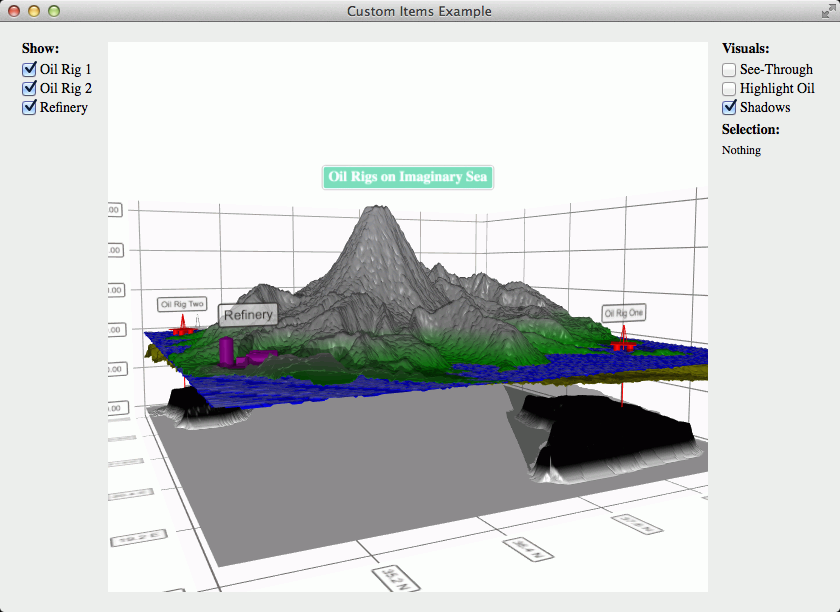

Custom Items Example
Adding custom items to a surface graph.
The custom items example shows how to add your own custom meshes as items to a graph, and how to remove them.

Running the Example
To run the example from Qt Creator, open the Welcome mode and select the example from Examples. For more information, visit Building and Running an Example.
Adding Custom Meshes to the Application
We'll add the meshes in a resource file:
<RCC> ... <qresource prefix="/items"> <file>refinery.obj</file> <file>oilrig.obj</file> </qresource> </RCC>
Adding Custom Item to a Graph
In this example we do not have specific textures for our meshes, so we'll just create a small QImage and fill it with a single color:
QImage color = QImage(2, 2, QImage::Format_RGB32); color.fill(Qt::red);
Then we'll specify the position for the item in a variable. This way we'll be able to use it later for removing the correct item:
QVector3D positionOne = QVector3D(39.0f, 77.0f, 19.2f);
Then we'll create a new QCustom3DItem with all the parameters:
QCustom3DItem *item = new QCustom3DItem(":/items/oilrig.obj", positionOne, QVector3D(0.025f, 0.025f, 0.025f), QQuaternion::fromAxisAndAngle(0.0f, 1.0f, 0.0f, 45.0f), color);
And finally we'll just add the item:
m_graph->addCustomItem(item);
Removing Custom Item from a Graph
We'll just call removeCustomItemAt() with the position of the item:
m_graph->removeCustomItemAt(positionOne);
Note: Removing a custom item from the graph also deletes it. If you want to preserve the item, you need to use releaseCustomItem() method instead.